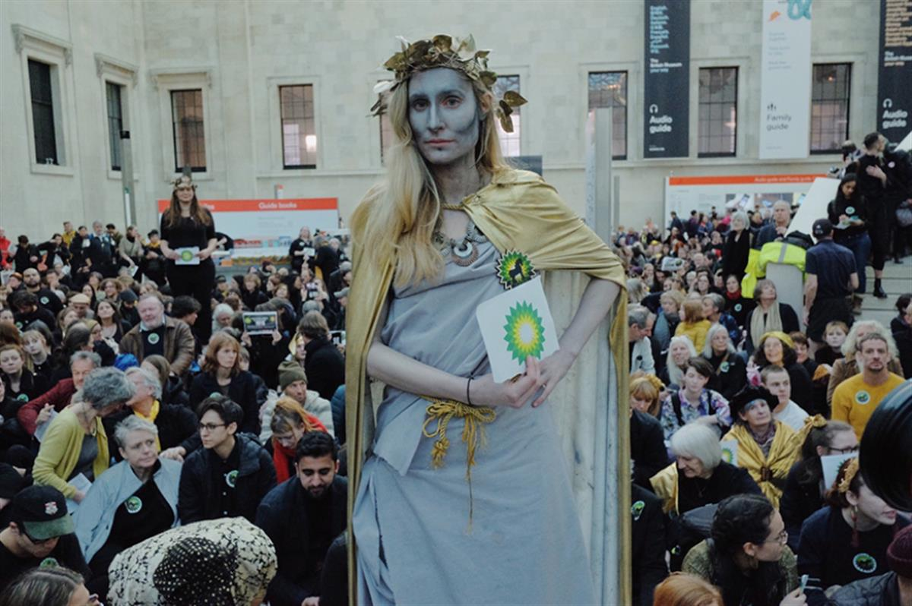
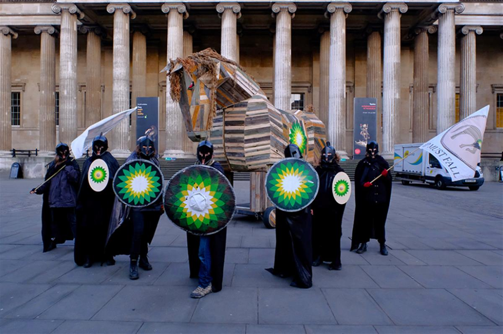
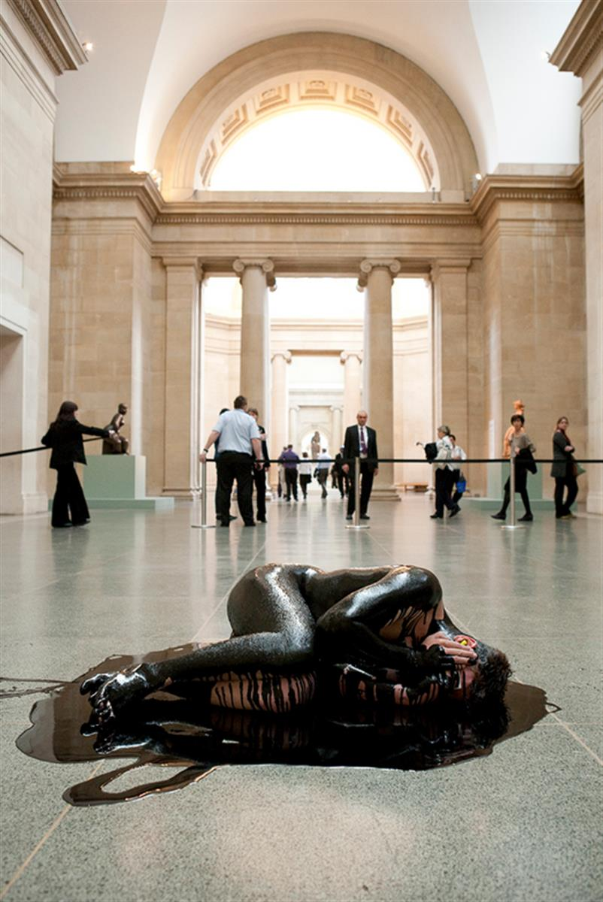
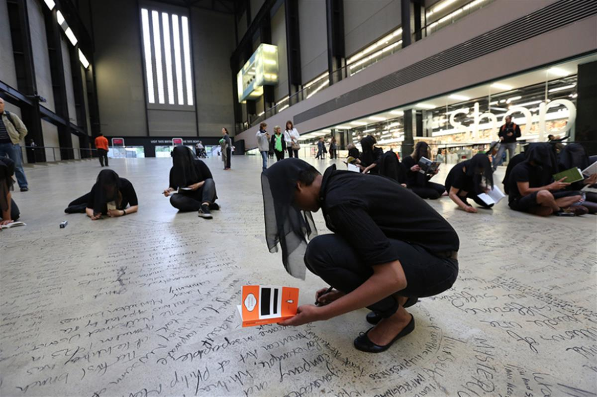

How Activists Made the Art World Wake Up to the Climate Crisis
From school strikers at the Royal Shakespeare Company to a Trojan horse at the British Museum, protests over oil sponsorship have gripped the arts
SOURCE: FRIEZE
The floor of Tate Modern’s Turbine Hall is not designed for sleeping on. Yet, I awoke there during Time Piece, a performance protest by Liberate Tate, involving 75 people. I looked past the other activists asleep beside me to those whose turn it was to write. Over the course of 25 hours – from the River Thames’s high tide on 13 June 2015 to high tide the following day – we transcribed in charcoal real and imagined responses to art, activism, climate change and the oil industry, rising up the slope of the hall in waves. When the performance ended, the cleaning staff swiftly wiped away the words that had taken us so long to write. Beginning in 2010, Liberate Tate’s art activists undertook 16 unsanctioned performances inside London’s Tate Modern and Tate Britain, demanding that the gallery change its sponsorship policy.

Climate activists stage protest at the British Museum, London, 8 February 2020. Courtesy: BP or not BP?; photograph: Amy ScaifeIn 2016, Tate finally ended its 26-year relationship with the oil giant BP. Last year, it became one of the largest institutions to join Culture Declares Emergency, a network of artists, theatres and galleries calling for urgent action to immediately tackle climate change, which currently includes 762 participants. In September 2019, around 200 arts workers joined the Global Climate Strike in London, gathering outside the National Theatre. This was swiftly followed by the National Theatre announcing it would end its own sponsorship deal with Shell. In November 2019, National Galleries Scotland announced that it was the last year they would host the BP Portrait Award.
Over the past weekend, climate activists have staged a 51-hour performance intervention against the British Museum’s acceptance of oil company sponsorship. They smuggled a 13-foot-tall Trojan horse into the London museum’s entrance, and then filled the museum with 1500 protesters. Finally, 60 performers spent the night inside the museum’s Great Court making plaster casts of body parts, in a live sculptural artwork titled Monument (2020).

The Trojan Horse, British Museum, London, 7 February 2020. Courtesy: BP or not BP?; photograph: Hugh WarwickWhy, after decades of apathy, has the debate around the oil industry’s funding of art institutions taken centre stage? One obvious answer is that as the climate emergency has become more urgent than ever, the oil industry’s driving role is now in the public eye. Time Piece took place five months before the 2015 United Nations Climate Change Conference and the drafting of the Paris Agreement: a major step in the international effort to battle climate change, which aims to limit the global average temperature increase to 1.5°C. The difference between 1.5 and 2°C is staggering in terms of loss of life, livelihoods, homes and habitats. A rise of more than 2°C would be catastrophic.
Several years ago, there were few front-page features on what is now broadly accepted as the most urgent issue of our time. In October 2018, the Intergovernmental Panel on Climate Change (IPCC) – the world’s leading authority on climate science – reported that we are not on our way to fulfilling the Paris Agreement: carbon emissions have continued to rise and few steps have been taken to redirect the global economy away from fossil-fuel combustion. The IPCC warned that we have 12 years to limit climate change, which will only be possible if major governmental measures are taken imminently. Their call was heeded by Swedish activist Greta Thunberg, the worldwide youth strikes that she inspired and the global environmental group Extinction Rebellion. This is a movement that demands real change urgently, speaking out with no fear or hesitation. Its aim is for this November’s UN climate change conference in Glasgow to convert the high ambition of the Paris Agreement into practical action.
Culture Declares Emergency action, April 2019, Tate Modern, London. Courtesy: Culture Declares Emergency
For activists keen to divest the art world from oil money, have tactics changed at all? Last September, we saw young people arrive on the doorstep of the Royal Shakespeare Company (RSC) demanding action and making it happen. While actor Mark Rylance had been pushing the institution to cut BP sponsorship since 2012 – ultimately resigning from the RSC in June 2019 – the youth strikers who declared they would boycott school trips were heard immediately. (The RSC severed ties with the oil giant the following week.) This younger generation, politicized by a climate crisis that is so evidently imperilling their future, were able to intervene as they represented the very audience the theatre hoped to attract – making them a powerful constituency. The RSC responded: ‘Young people are now saying clearly to us that the BP sponsorship is putting a barrier between them and their wish to engage with the RSC. We cannot ignore that message.’
These moves from the cultural sector are enormously encouraging. They have the power to delegitimize the oil industry. These companies do not deserve a table at the climate-change conversation: they are spending billions on new oil and gas, drilling us deeper into the ecological crisis, and millions on slick advertising campaigns designed to make the viewer think about anything but oil. If the oil industry had seriously wanted to help stop climate change, it would have diverted to renewables decades ago. By accepting sponsorship, cultural institutions are giving power and legitimacy to this toxic industry. They may see themselves as outside of the messy politics of civil society, but they are not. Cultural institutions are right at the heart of what makes up the status quo.
It is important to note that all of these activist groups acknowledge that the arts need funding – more than that, they should be amply funded given the vital social and, indeed, economic role they play. Yet, oil sponsorship doesn’t amount to very much. It’s often a tiny fraction of overall income, and nothing compared to the amounts drawn from government and public funds. Between 2007 and 2011, Tate received GB£350,000 most years from BP – less than 0.5 percent of the gallery’s annual budget. The real point is where the moral line is drawn. In response to the climate emergency, the Institute of Fundraising has offered support to organizations looking to withdraw from financial backing they no longer see as acceptable on environmental grounds. It has revised its advice from 2018 – ‘ethics and values shouldn’t be the overriding reason to refuse a sponsor’ – to a new pledge in 2019 to ‘provide more support to members on when they can refuse donations or step away from partnerships because of environmental concerns’.

Liberate Tate, Human Cost, 2011, performance documentation. Photograph: Amy Scaife
Nevertheless, some notable institutions continue to procrastinate in the face of these urgent demands. London’s British Museum and the Louvre in Paris, which have received funding from BP and Total respectively, are similar in age (both were founded in the 18th century), remit and conservative responses to calls to end oil sponsorship. With millennia of cultural artefacts on display, conservation goes right to the heart of what these museums do and is precisely why they must act. For the Louvre on the banks of the Seine and the British Museum not far from the Thames, the threat of flooding is all too real. Indeed, in 2016, the Louvre was forced to close its doors and evacuate artworks to higher levels after the Seine burst its banks. Will these museums continue to accept support from companies that put their very collections at risk?
In November 2019, the activist group BP or Not BP? staged its 58th performance intervention at the invite-only opening of the BP-sponsored exhibition ‘Troy: Myth and Reality’ at the British Museum. The group’s protests have included the rebel exhibition ‘A History of BP in 10 Objects’, shown in the British Museum’s Great Court in 2016 (with items ranging from tar sands to bullet shells), and the erection of a Viking longship by around 200 people in the same square in 2018. The ‘Troy’ intervention saw living statues blocking the five entrances to the exhibition, taking up their posts as the museum closed its doors to the public. Party guests were rerouted but many caught sight of the striking figures of Zeus, Athena, Achilles and Helen of Troy alongside a god of the group’s invention, Petroleus, who wore an oil-stained robe with a BP logo. Among a chorus of activists was theatre director Zoe Lafferty, whose participation was especially remarkable: a film of her play Queens of Syria (2016) was on view in the exhibition.
The day before, on 18 November, Lafferty and performer Reem Alsayyah had published an open letter to the director and trustees of the British Museum expressing their dismay at finding their work shown beside the BP logo: ‘As many in our sector are now distancing themselves from BP, we feel we have a responsibility to speak out too and make clear that our work should not [...] help artwash the impacts and crimes of BP, a multinational oil and gas company that has wreaked havoc on this planet and its people.’ Lafferty articulated these sentiments to board member Muriel Gray, who met with the assembled activists. Previous trustee Ahdaf Soueif resigned from her position last year, citing the museum’s intransigence on a range of issues, including BP sponsorship. The museum has ruled out BP as a sponsor for its upcoming exhibition centred around climate change in the Arctic, clearly cognisant of the dissonance in this instance at least.
Greta Thunberg speaks at a demonstration, Jokknokk, northern Sweden, 7 February 2020. Courtesy: Getty Images/AFP; photograph: Jonathan Nackstrand
It is important to remember why companies like BP and Shell buy these sponsorships: the creation of a guise of social legitimacy that they need to continue their profitable operations. The industry plans to invest US$5 trillion over the next decade on the exploration and extraction of new oil and gas sources. According to a 2019 report by Global Witness, all production from these additional fields is incompatible with the aims of the Paris Agreement, which instead requires the companies to halt all new drilling plans and pull back on some existing wells. That’s why BP’s greenwash has become so desperate, plastering ad campaigns with images of banana peels and wind turbines: they know the way the world is turning and are trying to mask the products that make up 97 percent of their books. Any plans BP, Shell, Total and other firms do have to remedy the impact of their emissions are based on unproven technologies, the mirage of which only delays the inevitable: a managed decline of oil and gas production.
Meanwhile, concerns over oil sponsorship have moved from the margins to the centre of the art world. Both Liberate Tate and BP or Not BP? have taken these questions right to the heart of the museum. The warning issued by the climate emergency movement, led by the IPCC, is stark and compelling. Decisions made by governments and corporations over the next three years could shape the entire century. Civil society and cultural institutions have to play their parts in making the most conscientious demands for action. More than that, the arts must offer us a way of imagining what lies beyond our current toxic infrastructures. Energy is not oil. Offshore wind is currently the cheapest form of energy in the UK. Electricity doesn’t need fossil fuels to power our daily lives. Cultural institutions can provide us with the history and vision to recognize that the way the world is today may not be the way it is tomorrow.
This will be an historic year for climate action. Each month, youth strikers are set to gather in hundreds of towns and cities across the UK, Extinction Rebellion plans more weeks of action and Culture Declares Emergency urges cultural leaders to stand tall. The challenge to the art world is clear: take action now and step over to the right side of history. The cultural establishment must sever all its ties to the fossil-fuel industry, heeding the call of youth strikers at the Science Museum – a place designed for their use but which has received funding from Equinor, BP and Shell. ‘[It’s] ironic because those companies are destroying the planet,’ a 17-year-old striker told the Sunday Telegraph last October. ‘The Science Museum […] has to listen to our demands and recognize what young people feel is important.’

Liberate Tate, Time Piece, 2015, performance documentation. Photograph: Martin LeSanto-SmithThe climate crisis cannot wait for the status quo to catch up – it’s time for the people who shape culture to change it. The charcoal used by Liberate Tate on the Turbine Hall floor whispered of the coal once burnt in the former power station, when it supplied London with electricity. The Clean Air Act of 1956 signalled coal-fired power’s decline. Now, 64 years later, coal has been almost completely phased out of electricity production in the UK. The Turbine Hall stands as a monument to change in how we power our society. Once the cultural establishment is clear of oil sponsorship, it can embody a new era of hope and possibility.
Main image: Extinction Rebellion activists, British Museum, London, 8 February 2020. Courtesy: Getty Images; photograph: Ollie Millington
Mel Evans is a writer, activist, artist and part of Liberate Tate. Her book Artwash: Big Oil and the Arts (Pluto Press, 2015) examines the function and impact of oil sponsorship. She has been involved in climate activism since 2005.
SOURCE: FRIEZE